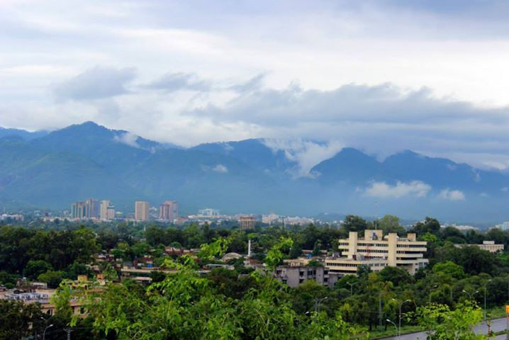
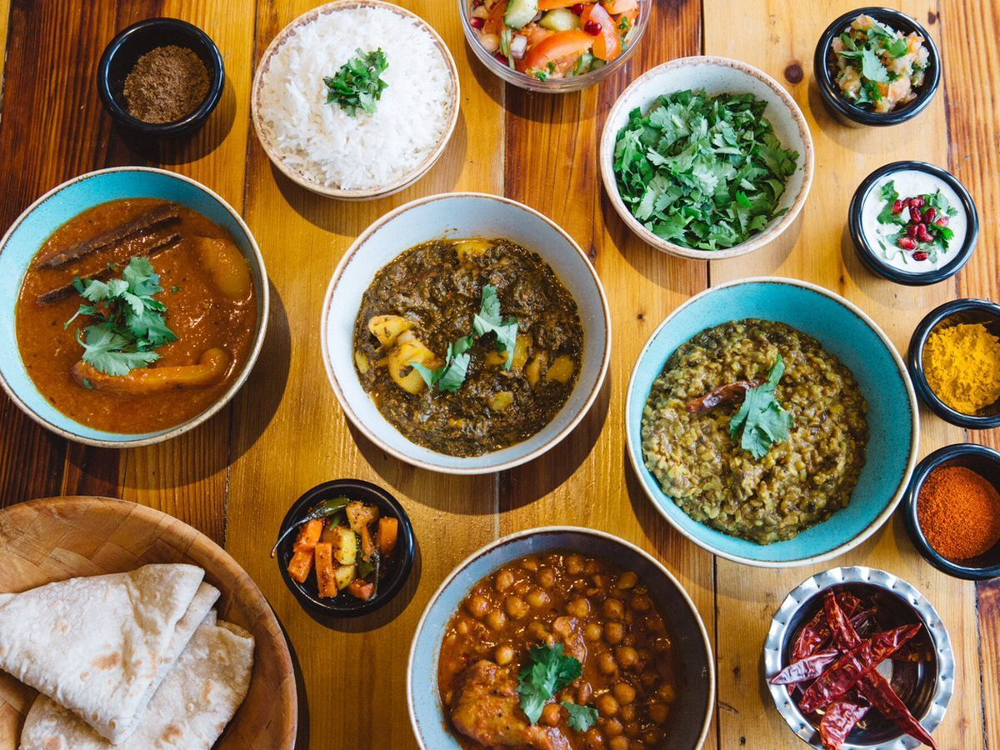

Beauty
Islamabad – the capital city of Pakistan, is one of the most beautiful cities in the South Asian region. Wide, tree-lined streets adorn the various sectors and zones of the city, making it accessible and spectacular. A meticulously planned city by renowned town planners Doxiadis Associates, Islamabad is the fastest growing city in terms of population, economy and urban development.The city combines a rich history, the confluence of many a civilization and temperate climate. The region has historically been a part of the crossroads of Punjab and Khyber Pakhtunkhwa, Margalla pass being a gateway to the Khyber Pakhtunkhwa. The city was built during the 1960s to replace Karachi as Pakistan’s capital.

Food
Islamabad is home to many diplomats, overnment officials and foreign workers and is reflected in their cuisine. Islamabad celebrates food festivals through its ethnic groups with examples such as the Food Festival 2011, Austrian Food Festival 2013 [1] and Swiss Food Festivals.[2] As Pakistan is known for its diverse, traditional food options such as Nihari, Halwa Poori, Daal, Chapli Kebab, Islamabad's cuisine has further developed as they now have foreign franchises such as McDonald's, KFC, Hardee's, Subway, TGI Fridays, Cinnamon Café and China Grill. Fast food chains are as common as traditional food outlets in Islamabad.Among foreigners and people of a more affluent background are seen in a famous eating area known as Kohsar Market which includes many cafe's and restaurants that range from Pakistani, continental to Thai cuisine.The class distinction, moreover, has infiltrated not only the residential areas but also the many eateries that Islamabad hosts. Islamabad is home to a majority of Muslims and a minority of Christians. Christians are relegated to slum like neighborhoods in sectors of Islamabad like F-6, F-7, and G-11. Islamabad is a more affluent city at its core yet there are poorer areas within it that have been confined to specific sectors. Islamabad is a city where the government officials reside as it is mostly a political city at the heart of Pakistani politics. There are common eateries for political figures while there are others which are only for people of a possible middle or lower class.